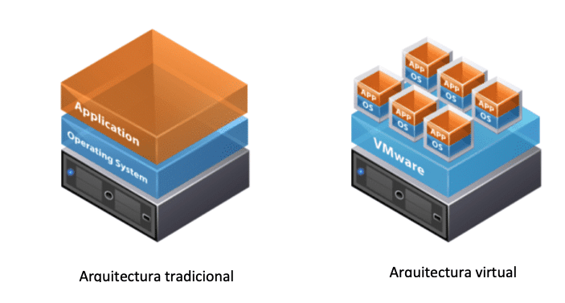
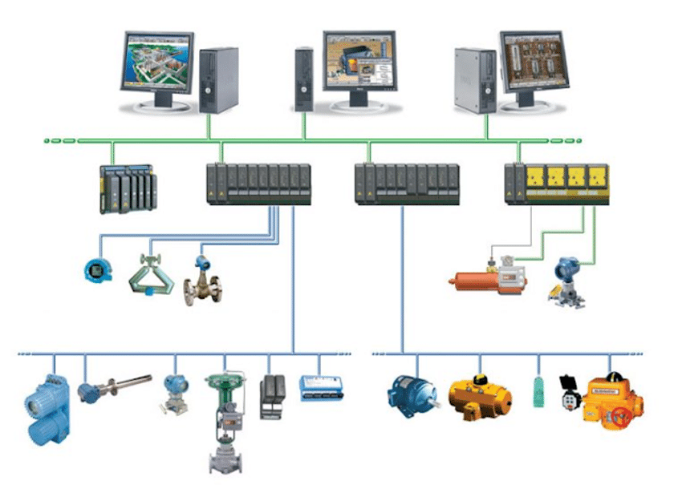

En el sector industrial existen dos conceptos que suelen entenderse por separado: IT y OT. Las Tecnologías de la Información y las Tecnologías de la Operación son dos conceptos distintos. IT suele utilizarse en el ámbito de los negocios y las empresas, se corresponde al conjunto de dispositivos en una red para el tratamiento de datos y ejecución de procesos de negocio. En cambio, la Tecnología de las Operaciones (OT) está dedicada a los procesos físicos a través de la monitorización y el control de dispositivos, como tuberías, válvulas, generadores, turbinas, etc.
Todo profesional que esté inmerso en el sector de la tecnología conoce la virtualización y sus aplicaciones técnicas, dado que lleva años implementada en el sector IT, pero ¿qué ocurre en OT? ¿a qué se debe esta adopción lenta de entornos virtualizados en los sistemas de control en las plantas industriales?
En este artículo vamos a hablar concretamente de las ventajas e inconvenientes de virtualizar la infraestructura del sistema de control distribuido (DCS), con el objetivo de intentar arrojar algo de luz a un tema tan poco discutido. Pero antes de entrar en el meollo de la cuestión, repasemos sin entrar en mucho detalle en qué consiste la virtualización y qué es un DCS.
¿Qué es la virtualización?
La virtualización es la tecnología que permite la ejecución de varias máquinas virtuales, tales como servidores, sobre un dispositivo físico con el fin de aprovechar al máximo los recursos de un sistema y conseguir que el rendimiento sea mayor. Cada máquina virtual puede interactuar de forma independiente entre ellas con diferentes recursos, memoria, unidades de almacenamiento, procesado, sistemas operativos y/o aplicaciones mientras comparten los recursos de una sola máquina host.
Al crear varios recursos a partir de un único equipo o servidor, la virtualización mejora la escalabilidad, al tiempo que permite usar menos servidores y reducir el consumo de energía, los costos de infraestructura y el mantenimiento.

¿Qué es un DCS?
Un DCS es un sistema de control aplicado a procesos industriales complejos en las grandes industrias como petroquímicas, papeleras, metalúrgicas, centrales de generación, plantas de tratamiento de aguas, incineradoras o la industria farmacéutica. Consiste en el enlace, por medio de una red de comunicaciones, de diversos nodos distribuidos físicamente, dotados de capacidad de proceso y enlazados a sensores y/o actuadores.
Estos sistemas se caracterizan porque el proceso de control tiene lugar en estos nodos de manera coordinada. Las redes de comunicaciones orientadas al enlace de estos nodos son conocidas también como buses de comunicaciones o redes multiplexadas.
Un nodo es un procesador autónomo con su propio hardware: procesador (CPU), memoria, oscilador de reloj, interfaz de comunicaciones, e interfaz hacia el subsistema que controla. Se trabaja con una sola base de datos integrada para todas las señales, variables, objetos gráficos, alarmas y eventos del sistema. La plataforma de programación es multi-usuario de forma que varios programadores pueden trabajar simultáneamente sobre el sistema de forma segura sin conflictos de versiones.
Virtualización del DCS: ¿qué podemos virtualizar?
A la hora de virtualizar un DCS debemos tener en cuenta que hay elementos que no podemos virtualizar por la naturaleza de estos, como podrían ser los elementos de campo: una válvula, un motor… Las redes de comunicaciones en un DCS se podrían virtualizar, tenemos la tecnología para ello, pero hoy en día no se contempla por diversos motivos, siendo el más relevante la complejidad de esta implementación y el hecho de que la red sea un elemento crítico de un DCS.
Habiendo descartado varios elementos susceptibles a virtualizar, solo nos quedaría la infraestructura de ordenadores del DCS con la que operamos la planta. Habría que virtualizar las máquinas físicas y añadirlas a equipos especializados en virtualización.

Ventajas
- Requerimos de menos espacio para alojar nuestra infraestructura; donde antes había varias cabinas con equipos, ahora esos equipos pueden incluirse virtualmente en un único servidor.
- El hardware especializado en virtualización es más robusto y fiable, por lo que las posibles averías y sustituciones de máquinas tradicionales se reduce.
- Mantenimiento de hardware más rápido: no es lo mismo hacer el mantenimiento de 10 máquinas físicas que hacerlo en un único servidor físico.
- Las tecnologías avanzadas de alta disponibilidad permiten la recuperación inmediata de cualquier máquina virtual que pudiera perderse por errores de configuración o de cualquier otro tipo.
- Si además se trabaja con un clúster de hardware de virtualización se garantiza la disponibilidad de las máquinas virtuales en situaciones de fallo del mismo hardware.
- Mayor escalabilidad del sistema gracias a la facilidad de crear nuevas máquinas en un sistema virtual mediante la clonación o creación de plantillas.
- La compartición de recursos entre las máquinas huésped gestionadas por la máquina host es más eficiente y configurable según las necesidades.
Desventajas
- El hardware especializado en virtualización es sustancialmente más caro que el hardware estándar.
- El licenciamiento de cada elemento de la infraestructura virtual es muy elevado en comparación con el licenciamiento de un entorno físico tradicional.
- El tiempo de implementación es largo por la complejidad del proceso, y dada la naturaleza de producción en una planta industrial, encontrar ese momento para implementar el sistema se puede tornar complicado.
- Se está añadiendo una capa más de gestión en el proceso de la planta, por lo que los técnicos de mantenimiento deben estar formados para ello.
- Si el host cae, caen todas las máquinas que contiene. Esto puede prevenirse mediante distintas soluciones que ofrecen los proveedores para añadir capas de seguridad con tolerancia a fallos, lo que eleva el coste del proyecto.
En definitiva, viendo los pros y contras, se hace visible que el principal inconveniente de esta implementación es el elevado coste inicial, pero manteniéndola en el tiempo y con el personal técnico adecuado, en el medio-largo plazo el coste será más económico que un sistema tradicional.